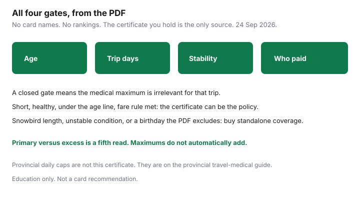

Insurance · Canada
Credit Card Travel Medical in Canada: How to Read the Certificate Before You Skip a Policy
A credit-card page that says “travel insurance included” is an advertisement. The coverage, if it exists, is an insurance certificate issued by an insurer, with a maximum, an age, a maximum trip length, and a definition of a pre-existing condition. Households skip a standalone policy because of the advertisement and then learn, in a clinic, that the trip was too long or the cardholder was too old for that certificate. This page is how to read the PDF. It does not name a best card, rank products, or compare annual fees. Provincial hospital caps and snowbird residency clocks are on the other Insurance guides. Product shopping for cards, if you want it, belongs on a card site, not here.
Disclosure: Standalone travel medical policies are an offer type. Saving Optimizer may earn a commission if partner links are added later. We do not currently claim a travel-insurer or card-issuer partnership. We do not rank cards. Education only. Certificate wording changes. The only numbers that bind you are the ones in the PDF for the card you hold, read before you travel.
Key takeaways
- Download the insurance certificate from the insurer named on the card. The marketing blurb does not pay claims.
- Write down the maximum age, the longest covered trip, and the pre-existing stability rule. Those three lines cause more denials than the medical maximum.
- Pay-with-card rules differ. Some certificates require the full fare on that card. Some require any charge. Some cover a spouse who is not a cardholder. Read who qualifies.
- A short trip by a healthy traveller under the age cap can fit the certificate. A snowbird winter, an unstable condition, or a birthday the certificate excludes means a standalone policy or a top-up.
- If you keep both, read which contract is primary and which is excess. They do not automatically add their maximums together.
Find the insurance certificate PDF—not the marketing blurb on the card page
Find the document that has a policy or certificate number, an insurer’s legal name, and a definitions section. It is usually a PDF linked from the card’s “insurance” or “certificate of insurance” footer, or mailed when the account opens. A landing page with icons for medical, baggage, and car rental is not that document.
- Save the PDF with the date you downloaded it. Certificates are replaced. The one in force on the day the trip starts is the one that matters. A screenshot of a rewards page will not satisfy an adjuster.
- Confirm the insurer. The bank or card network is often the distributor. The claim is with the insurer named in the certificate. The assistance phone number is in that PDF, not in the card’s general customer-service menu.
- Note the product name and the account type. A no-fee card and a premium card from the same issuer can have different certificates. An authorized user is not always an insured person.
- If you cannot find a certificate, assume you do not have card medical coverage until the issuer sends one. Do not reconstruct it from a forum.
While you are in the PDF, ignore trip-cancellation and baggage until the medical section is copied out. Those are different promises. A strong baggage limit does not enlarge the medical maximum.
Age limits, trip-length caps, and pre-existing exclusions that kill claims
Copy these fields into a note before you compare the certificate with a standalone policy. The examples of ages and day counts below are the kinds of limits that show up in Canadian certificates. They are not a survey, and they are not your card.
| Field | What to write from your PDF | How claims fail |
|---|---|---|
| Age | The birthday after which coverage reduces or ends. Some certificates cover a shorter list of benefits after a stated age. Some stop. | A trip that was fine at 64 is a different contract at 65 if that is the line in the PDF. Ask what happens if the birthday falls during the trip. |
| Trip length | The maximum days in one covered trip. Also whether the days are counted from the day you leave your province. | A certificate built for a few weeks does not cover day 40, and it does not cover a snowbird season. The snowbird guide is that calendar. |
| Pre-existing condition | The definition, the stability period (often a number of days such as 90, 180, or 365), and any medical questionnaire. | A change in medication, a new symptom, or a test you have not had back can fail stability. Answer as the definition is written. The provincial guide’s stability section is the same idea on a standalone policy. |
| Maximum and deductible | The medical dollar cap, any sub-limit, and the deductible. | A high headline maximum does not help if the age or the trip length already excluded you. A deductible you cannot pay is still your cash. |

Also read exclusions for travel against a physician’s advice, alcohol, high-risk sports, and pregnancy. Those exclusions are not “fine print” in the insulting sense. They are the contract. If one of them describes your trip, the card is not coverage for that trip.
Pay-with-card rules and who must be a cardholder
Card medical certificates are not automatic because you own the plastic. The usual conditions, and yours may use only some of them:
- The fare rule. The full transportation cost charged to the card, or a deposit, or any portion. If the rule says “full,” a gift card, a companion voucher, or a points booking that never hits the card can take you outside the certificate. If you paid with points, read whether the certificate accepts a points redemption on that account. Do not guess.
- The cardholder. Coverage often requires the account to be open and in good standing. A cancelled card before the trip, or a card that is only a supplementary card, may fail a definition of “cardholder.”
- Spouse and children. Some certificates cover a spouse and dependent children travelling with the cardholder, up to a stated age, even if the spouse did not pay. Some require each adult to be a cardholder. Write the names that qualify. A parent on a different card is not your dependant.
- The trip must be a covered trip. Departure from your province, a return date, and sometimes a requirement that you did not extend past the day cap. A one-way move is not a vacation certificate.
If the rule is ambiguous, ask the insurer named in the certificate, not the card’s rewards chat, and keep the answer. An ambiguous rule resolved in your favour by a forum is not a claim.
When card coverage is enough for short healthy trips vs when to buy top-up
Use the four gates. Card coverage is a reasonable place to stop when every gate is open: you are under the age line, the trip is shorter than the day cap, you meet the stability definition with room to spare, the people travelling are insured persons, the fare rule is satisfied, and the maximum is in the range you would have bought anyway for that destination. For a healthy week in the United States under those conditions, the certificate can be the policy. You still call the assistance number in the PDF if the wording says to call.
Buy a standalone policy or a top-up when any gate is closed:
- The winter is longer than the day cap. Do not “use the card for the first month” unless the standalone or top-up starts before the cap with no uninsured day, and you have read both stability clauses.
- Someone’s condition is not stable under that definition. A standalone policy that will cover the condition, or a decision not to go, is the choice. The card will not become generous at the clinic.
- A traveller is past the certificate’s age, or will pass it on the trip and the PDF does not cover the return date.
- The province’s eligibility is in question because of a long absence. Card insurance often requires you to be covered by your provincial plan. The provincial caps guide and the snowbird guide are that test. OHIP’s out-of-country hospital amounts are not the card.
Price the standalone on the same maximum and a deductible you can pay. Travel-medical quote flows are an offer type. The comparison is days, age, and stability, not a logo.
Stacking card + standalone: primary vs excess wording
Two contracts can coordinate in ways that do not increase what you collect.
- Primary. That policy pays first, up to its limit, subject to its exclusions.
- Excess. That policy pays only what the other insurance did not, and sometimes only after you have claimed on the other insurance. If both documents say they are excess, you can be stuck between two assistance lines. Read the “other insurance” section of each before you leave.
- Same loss, two cheques. Do not expect the card maximum and the standalone maximum to add. Coordination clauses exist so you are not paid twice for the same bill. You want one contract that is clearly primary for the trip you are taking.
A practical stack, when you need one: a standalone policy that matches the whole trip and says whether it is primary, and the card certificate left in the folder for baggage or for a benefit the standalone does not duplicate. If the standalone says it is excess over “any credit card insurance,” the card is primary for the days it actually covers, and the standalone has to be read for the days the card has already expired. That sentence is why a snowbird should not improvise a stack in the departure lounge.
Employer group travel medical is a third contract. It ends when the booklet says, often with the job, and it has its own day cap. Put it on the same sheet. The annual review is the place.
Keep educational—no best-card listicle; point readers to coverage math
This site does not publish a best-card list, a fee comparison, or a ranking of medical maximums by product name. Those are card-market pages. They go stale, they are not your certificate, and a higher annual fee is not proof of a longer trip limit.
The math that belongs here is short enough to do on paper:
- Days of the trip, versus the certificate’s day cap.
- Age of the oldest traveller on departure and on return, versus the certificate’s age line.
- Whether each traveller meets the stability definition today, not on the day someone gets sick.
- Whether the fare rule is already satisfied by the way you paid.
- The medical maximum and deductible, next to the kind of hospital you are walking toward. The provincial guide’s point stands: public plans pay a small daily amount. The certificate or the standalone policy is the rest. Assuris health-expense protection, the greater of $250,000 or 90% at a member insurer, is a failure backstop if that insurer fails. It is not a reason to accept a thin maximum, and not every card certificate is issued by an Assuris member. Check.
If those five lines are clean, the card certificate can be the coverage. If they are not, buy a policy that makes them clean. Either outcome is a coverage decision. Neither outcome is a recommendation of a card.
Sources & date stamps
- Financial Consumer Agency of Canada, getting insurance — consumer framing that insurance is a contract you read, not a slogan. Used 24 Sep 2026.
- Certificate terms (age, trip length, stability, pay-with-card, primary versus excess) are product-specific. No card is named and no maximum is stated as typical.
- Ontario out-of-country hospital caps and the 153-day residency test are on the provincial and snowbird guides, stamped from ministry pages. They are not card benefits.
- Assuris health-expense protection, the greater of $250,000 or 90% at member insurers, is described on the provincial travel-medical guide from Assuris’s page used 23 Sep 2026. Confirm the issuer of a card certificate is a member before you rely on it.
Frequently asked questions
Does my credit card include travel medical insurance?
Only if a certificate of insurance says so for your account. Download that PDF. A sentence on the card’s marketing page is not a policy, and this guide does not rank cards.
What usually voids card medical coverage?
An age the certificate excludes, a trip longer than its day cap, a pre-existing condition that fails the stability definition, or a fare that was not charged the way the certificate requires. Read those four fields before you rely on the card.
Are spouse and children covered?
Sometimes, if they meet the definition of an insured person and they are travelling with the cardholder. Sometimes each adult must be a cardholder. The certificate says which. Do not assume.
Can I stack a card and a standalone policy?
You can hold both. Read which one is primary and which is excess. Maximums usually do not add together. Make sure there is no day in the middle when neither contract is on risk.
Is this a card recommendation?
No. Education only. Standalone travel medical policies are an offer type. We do not rank cards and we do not claim a partnership with any issuer or insurer.